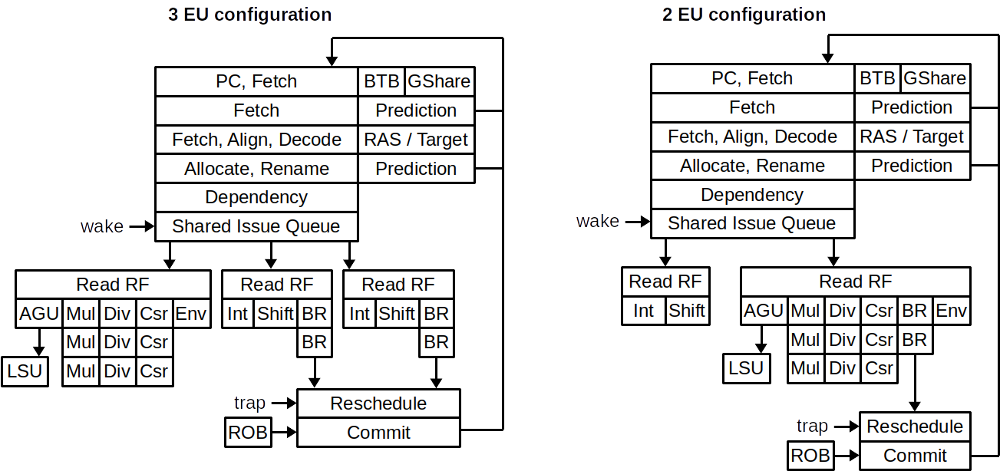

Pipeline¶
NaxRiscv is composed of multiple pipelines :
Fetch : Which provide the raw data for a given PC, provide a first level of branch prediction and do the PC memory translation
Frontend : Which align, decode the fetch raw data, provide a second level of branch prediction, then allocates and rename the ressources required for the instruction
Execution units : Which get the ressources required for a given instruction (ex RF, PC, ..), execute it, write its result back and notify completion.
LSU load : Which read the data cache, translate the memory address, check for older store depedencies and eventualy bypass a store value.
LSU store : Which translate the memory address and check for younger load having notified completion while having a depedency with the given store
LSU writeback : Which will write commited store into the data cache
But it should also be noticed that there is a few state machines :
LSU Atomic : Which sequencialy execute SC/AMO operations once they are the next in line for commit.
MMU refill : Which walk the page tables to refill the TLB
Privileged : Which will check and update the CSR required for trap and privilege switches (mret, sret)
Here is a general architectural diagram :
